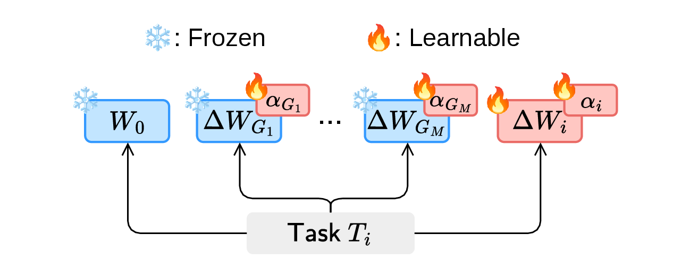
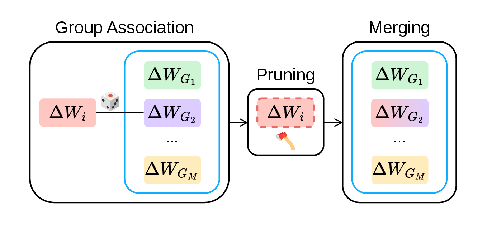
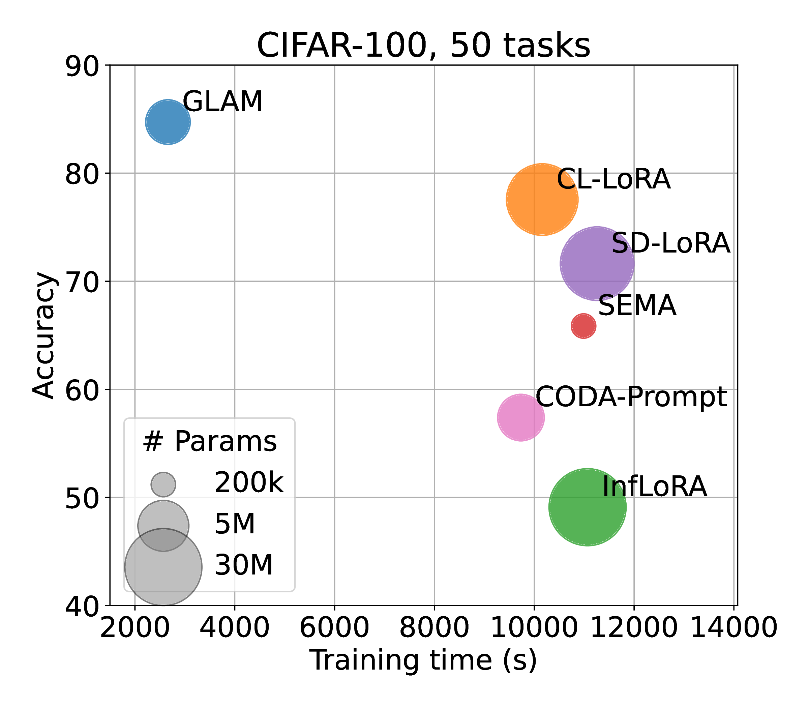
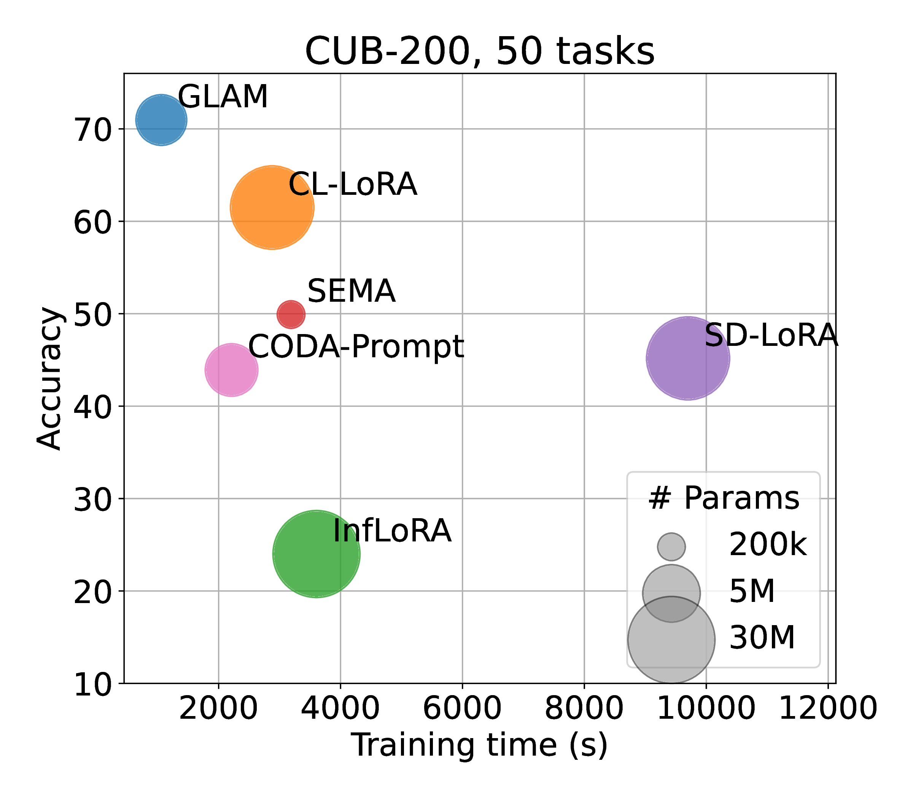
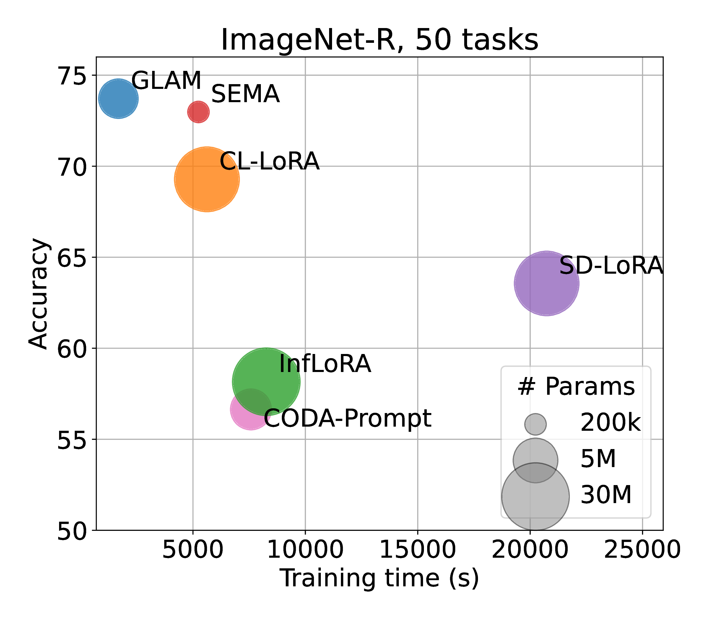

Task-specific adaptation
A lightweight LoRA adapter and importance scalar are learned for each incoming task. The backbone and existing group adapters remain frozen, while group importance scalars are updated.

1University of Pisa 2Indian Institute of Technology, Bombay 3University of Warwick 4Luiss University
Overview
The ability to learn continuously over time remains a major challenge for modern machine learning systems, even in the era of Foundation Models. While the rich representations learned by large pre-trained models can partially mitigate catastrophic forgetting, they still struggle to adapt efficiently to evolving data distributions. A key challenge remains: how to continually add new knowledge to a large pre-trained model in a way that is scalable and computationally efficient over long task sequences.
We introduce GLAM, a simple and effective framework for class-incremental continual learning based on LoRA adapter merging. For each task, GLAM trains a lightweight low-rank adapter with an importance scalar, incurring minimal computational overhead. Adapters are then pruned, rescaled, and sequentially grouped to enable structured knowledge reuse and limit parameter growth. At inference, all groups are combined into a single module, ensuring constant computational cost regardless of the number of tasks.
We evaluate GLAM on vision benchmarks with sequences of up to 50 tasks, significantly extending beyond standard protocols. GLAM achieves the highest accuracy across the evaluated benchmarks. Compared with the baseline attaining the highest average accuracy across benchmarks, it uses 16–19% of the trainable parameters and reduces training time by approximately 63–74%, demonstrating efficient and scalable continual learning. Our source code is publicly available at https://github.com/atlas-luiss/GLAM.
How it works
TL;DR: A highly efficient merging technique that groups LoRAs to reduce interference.
A lightweight LoRA adapter and importance scalar are learned for each incoming task. The backbone and existing group adapters remain frozen, while group importance scalars are updated.

The new adapter is assigned to one of a bounded number of groups, magnitude-pruned, and merged into the selected group adapter.

50-task evaluation
We evaluate GLAM over 50-task sequences to assess its performance in long-horizon continual learning.



Key result. Compared with competing methods, GLAM offers the best accuracy–efficiency trade-off across all three benchmarks, achieving the highest accuracy with lower training time and fewer trainable parameters.
Citation
@article{testa2025glam,
title = {GLAM: Efficient Continual Learning at Scale via Grouped LoRA Adapter Merging},
author = {Testa, Irene and Quarantiello, Luigi and Coleman, Eric Nuertey and Mukherjee, Samrat and Hurtado, Julio and Lomonaco, Vincenzo},
journal = {arXiv preprint arXiv:2509.13211},
year = {2025},
note = {Accepted at the 5th Conference on Lifelong Learning Agents (CoLLAs 2026)},
url = {https://arxiv.org/abs/2509.13211}
}